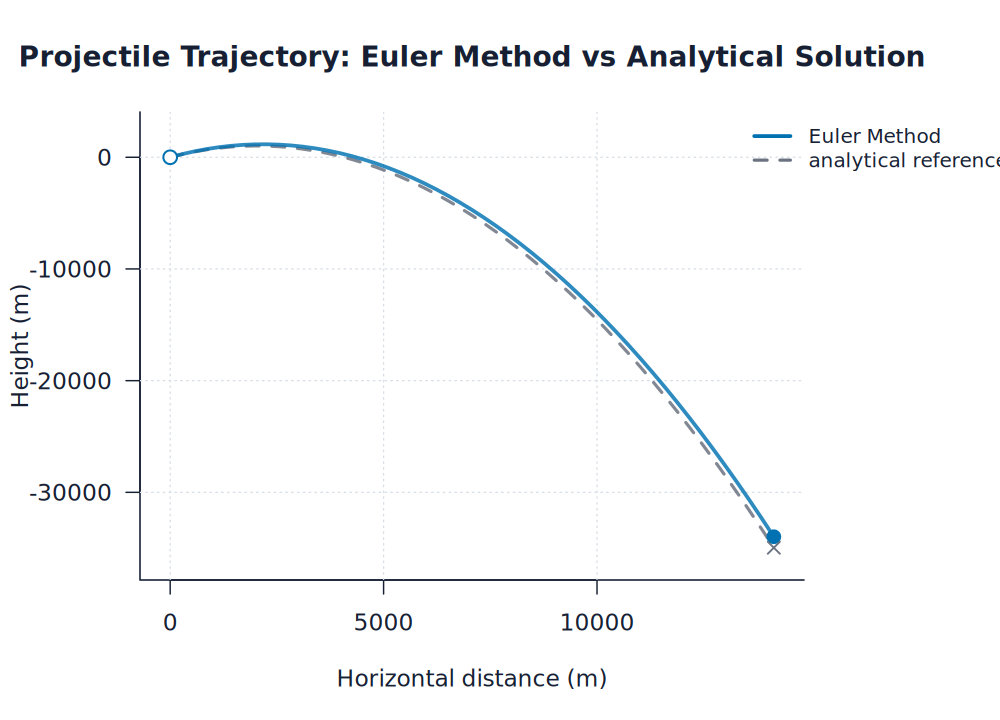
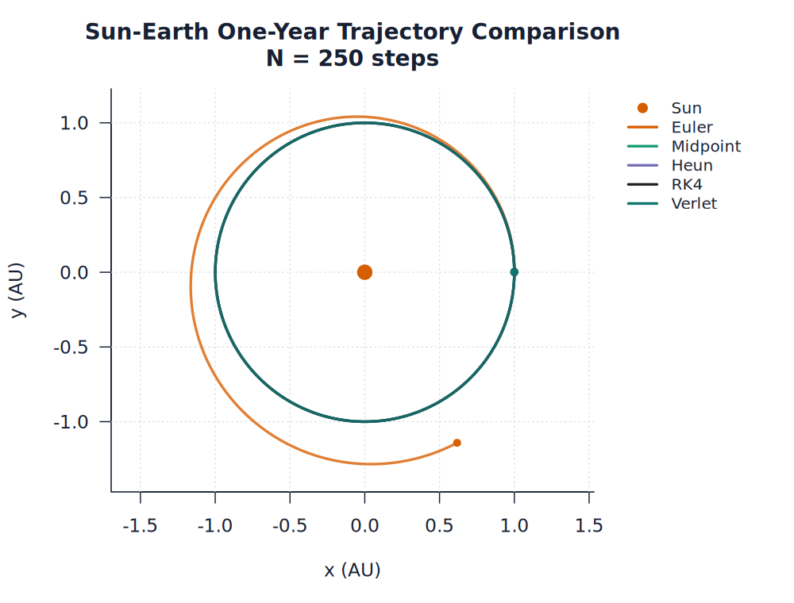
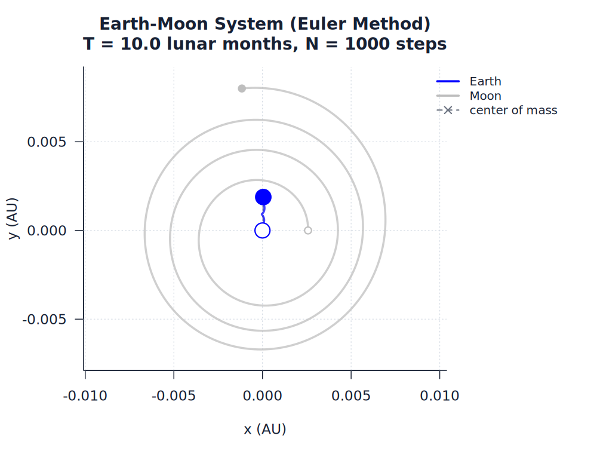
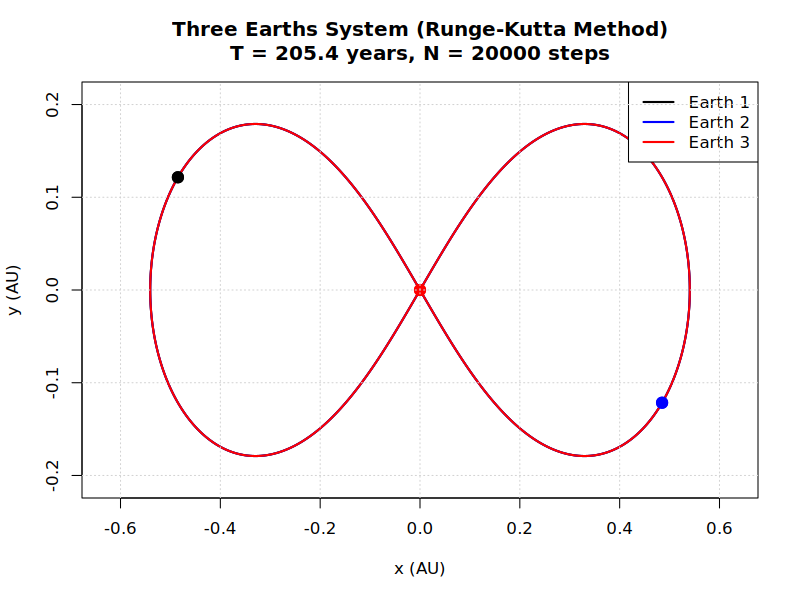
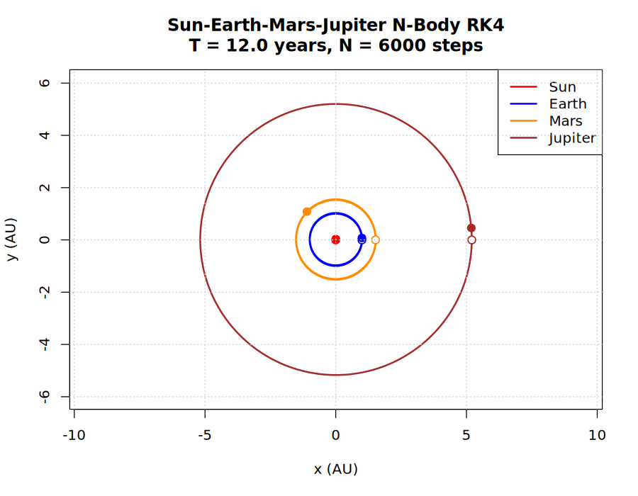
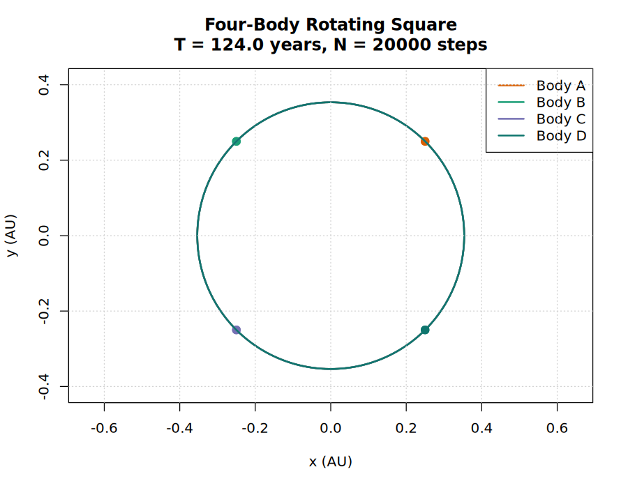

Installation
Install the development package directly from GitHub:
install.packages("remotes")
remotes::install_github("SidRichardsQuantum/Celestial_Dynamics_Iteration_Methods")
After R-universe has built the package, install from R-universe:
options(repos = c(
sidrichardsquantum = "https://sidrichardsquantum.r-universe.dev",
CRAN = "https://cloud.r-project.org"
))
install.packages("CelestialDynamicsIterationMethods")
R-universe setup notes and the registry details are in docs/R_UNIVERSE.md.
For source checkouts:
git clone https://github.com/SidRichardsQuantum/Celestial_Dynamics_Iteration_Methods.git
cd Celestial_Dynamics_Iteration_Methods
The R examples use base R. The optional Python helper R/systems/three_body/figure_8_solution.py requires packages listed in requirements.txt:
python -m pip install -r requirements.txt
Common Commands
Run all validation checks:
Rscript tests/run_all_tests.R
Run three-body validation only:
Rscript tests/validate_three_body.R
Run two-body validation only:
Rscript tests/validate_two_body.R
Regenerate every example plot and companion trajectory animation:
Rscript run_all_examples.R
Regenerate the Sun-Earth all-method comparison only:
Rscript examples/comparisons/sun_earth_all_methods.R
Regenerate generated result tables, conservation diagnostics, runtime benchmarks, convergence plots, the plot manifest, the results index, and the method comparison dashboard:
Rscript analysis/generate_results.R
Update the committed artifact size/dimension baseline after intentional plot or dashboard changes:
Rscript analysis/update_artifact_baseline.R
Open the generated local results index in a browser:
analysis/generated/index.html
The published GitHub Pages version is:
https://sidrichardsquantum.github.io/Celestial_Dynamics_Iteration_Methods/
Regenerate two-body plots only:
Rscript examples/two_body/run_all_two_body_examples.R
Regenerate n-body plots only:
Rscript examples/n_body/run_all_n_body_examples.R
Regenerate three-body plots only:
Rscript examples/three_body/run_all_three_body_examples.R
Run examples from the repository root so their source(...) paths resolve correctly.
Repository scripts bootstrap R/load.R, then use cd_source() or the module-level helpers such as cd_load_two_body() and cd_load_three_body(). Use those helpers for new scripts instead of adding long chains of direct source("R/...") calls.
The repository also has lightweight R package metadata (DESCRIPTION and NAMESPACE). This supports package build/load checks while preserving the script-driven example and artifact workflow.
Build and check the internal package surface:
R CMD build . --no-build-vignettes --no-manual
R CMD check CelestialDynamicsIterationMethods_*.tar.gz --no-manual --ignore-vignettes
The package namespace is intentionally conservative for now: functions are loaded for package checks, but stable public exports should be added only after the API is deliberately chosen.
Run the experimental near-periodic three-body search:
Rscript experiments/find_three_body_solution.R
This search is intentionally exploratory. It performs a small randomized search over symmetric equal-mass initial conditions and writes a candidate plot to images/three_body/experiments/candidate_solution.png.
Example Usage
Projectile trajectory:
source("examples/projectile/projectile_example.R")

Sun-Earth all-method comparison:
source("examples/comparisons/sun_earth_all_methods.R")

Earth-Moon system using Euler's method:
source("examples/two_body/earth_moon/earth_moon_euler.R")

Equal-mass figure-8 three-body solution:
source("examples/three_body/special_solutions/three_earths.R")

Four-body Sun-Earth-Mars-Jupiter example:
source("examples/n_body/sun_earth_mars_jupiter.R")

Special four-body rotating square:
source("examples/n_body/special_solutions/rotating_square_four_body.R")

Project Structure
Celestial_Dynamics_Iteration_Methods/
├── DESCRIPTION
├── NAMESPACE
├── README.md
├── docs/USAGE.md
├── docs/THEORY.md
├── docs/RESULTS.md
├── R/constants.R
├── run_all_examples.R
├── analysis/
│ ├── README.md
│ ├── generate_results.R
│ ├── update_artifact_baseline.R
│ └── generated/
│ ├── artifact_baseline.csv
│ ├── convergence_summary.csv
│ ├── earth_moon_method_summary.csv
│ ├── index.html
│ ├── method_summary.csv
│ ├── method_comparison_dashboard.html
│ ├── n_body_conservation_summary.csv
│ ├── plot_manifest.csv
│ ├── runtime_benchmark.csv
│ └── three_body_special_summary.csv
├── .github/
│ └── workflows/
│ ├── pages.yml
│ ├── r-validation.yml
│ └── regenerate-plots.yml
├── R/systems/
│ ├── plotting/
│ │ └── plot_style.R
│ ├── two_body/
│ │ ├── plot_two_body.R
│ │ ├── two_body_helpers.R
│ │ ├── two_body_method_registry.R
│ │ ├── two_body_euler.R
│ │ ├── two_body_heuns.R
│ │ ├── two_body_midpoint.R
│ │ ├── two_body_runge_kutta.R
│ │ └── two_body_velocity_verlet.R
│ ├── n_body/
│ │ ├── four_body_initial_conditions.R
│ │ ├── n_body_helpers.R
│ │ ├── n_body_runge_kutta.R
│ │ ├── n_body_velocity_verlet.R
│ │ └── plot_n_body.R
│ └── three_body/
│ ├── choreography_initial_conditions.R
│ ├── circular_restricted_three_body.R
│ ├── euler_collinear_initial_conditions.R
│ ├── figure_8_initial_conditions.R
│ ├── figure_8_solution.py
│ ├── lagrange_initial_conditions.R
│ ├── plot_three_body.R
│ ├── sitnikov_problem.R
│ └── three_body_runge_kutta.R
├── examples/
│ ├── README.md
│ ├── comparisons/
│ ├── n_body/
│ │ ├── run_all_n_body_examples.R
│ │ └── special_solutions/
│ ├── projectile/
│ ├── two_body/
│ │ ├── run_all_two_body_examples.R
│ │ ├── earth_moon/
│ │ └── sun_earth/
│ └── three_body/
│ ├── README.md
│ ├── run_all_three_body_examples.R
│ ├── general/
│ ├── perturbations/
│ ├── restricted/
│ └── special_solutions/
├── images/
│ ├── analysis/
│ ├── n_body/
│ ├── projectile/
│ ├── two_body/
│ └── three_body/
├── experiments/
│ └── find_three_body_solution.R
├── R/methods/
└── tests/
├── helpers_three_body.R
├── run_all_tests.R
├── validate_plot_generation.R
├── validate_restricted_three_body.R
├── validate_special_solutions.R
├── validate_two_body.R
└── validate_three_body.R
Generated Artifacts
Plots are generated artifacts, but this repository keeps representative PNGs under images/ so the markdown result pages render directly. Trajectory examples also write companion HTML canvas animations next to the PNGs. If an example is changed, run the relevant example runner and then run:
Rscript tests/validate_plot_generation.R
The GitHub Actions workflow R validation runs tests/run_all_tests.R on pushes and pull requests. The Regenerate plots workflow is manual; it runs run_all_examples.R, regenerates analysis artifacts, validates the outputs, and uploads regenerated image and analysis directories as artifacts. The Deploy GitHub Pages workflow regenerates plots, animations, and analysis artifacts, validates them, and publishes a static site containing analysis/generated/, images/, README.md, and docs/.
The generated comparison dashboard is written to:
analysis/generated/method_comparison_dashboard.html
The generated results index is written to:
analysis/generated/index.html
The plot manifest and artifact baseline used by validation are written to:
analysis/generated/plot_manifest.csv
analysis/generated/artifact_baseline.csv
Representative generated animations include:
images/two_body/sun_earth/sun_earth_runge_kutta.html
images/three_body/special_solutions/three_earths.html
images/n_body/sun_earth_mars_jupiter.html